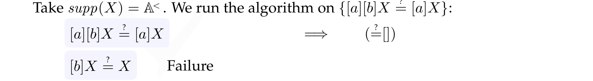
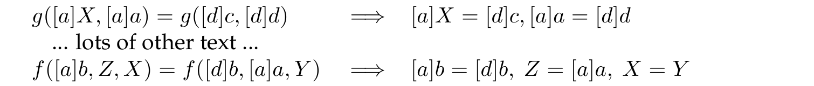

There are 10 kinds of people in the world: those who count in binary and those who don’t.
I mostly use Linux (an operating system) and LaTeX (a professional typesetting language). One of the charming things about these systems is their scripts; short programs to automate and speed up repetitive tasks.
The dollar sign $ is not a reference to money, but to the hackers' interactive prompt … serving humanity since punched tape went out of fashion. These scripts are provided free under the GPL for your convenience.
I cannot guarantee that this code will do what you expect, nor that this code will not do what you would not expect — like e-mail itself to your friends, wipe your data, blow smoke, and die laughing. Therefore what these scripts do to you, your data, or your material possessions, is your responsibility and not mine.
If you would like such guarantees to become possible — then fund computer science research.
Convert for web
Let’s start with something simple. I have used this bash script to convert my photos to 1600x1200 for the web:
for i in *.dir/*[.jpg,.JPG];
do convert -size 1600x1200 $i -resize 1600x1200 -quality 65 $i;
echo Converted $i;
done
chmod -R o+x *.dir
chmod -R o+R *.dir/*Too many math alphabets in LaTeX
This annoying error message is explained here. Bottom line: if you’ve got
\usepackage{bm} in your preamble, try this:
%avoid "too many math alphabets" latex error
\newcommand\hmmax{0}
\newcommand\bmmax{0}
\usepackage{bm}Improve fonts in LaTeX
I recommend using \usepackage{microtype} (even if you are using pdflatex).
It just makes everything nicer.
There are also plenty of nice fonts out there. Here is my fonts preamble:
%FONTS
%\usepackage{lmodern}
\usepackage{microtype}
%\usepackage{tgadventor}
%TeX Gyre Adventor is based on the URW Gothic L family of fonts
% (which is derived from ITC Avant Garde Gothic,
% designed by Herb Lubalin and Tom Carnase).
%\usepackage{tgbonum}
%TeX Gyre Bonum is based on the URW Bookman L family
% (from Bookman Old Style,
% designed by Alexander Phemister).
%\usepackage{tgchorus}
%TeX Gyre Chorus is based on URW Chancery L Medium Italic
% (from ITC Zapf Chancery,
% designed by Hermann Zapf in 1979).
%\usepackage{tgcursor}
%TeX-Gyre Cursor is based on URW Nimbus Mono L
% (based on Courier,
% designed by Howard G. Kettler in 1955, for IBM).
%\usepackage{tgheros}
%TeX Gyre Heros is based on URW Nimbus Sans L
% (from Helvetica,
% prepared by Max Miedinger, with Eduard Hoffmann in 1957).
%\usepackage{tgpagella}
%TeX Gyre Pagella is based on URW Palladio L
% (from Palatino, designed by Hermann Zapf in the 1940s).
%\usepackage{tgschola}
%TeX Gyre Schola is based on the URW Century Schoolbook L family
% (which was designed by Morris Fuller Benton for
% the American Type Founders).
\usepackage{tgtermes}
%TeX Gyre Termes is based on the URW Nimbus Roman No9 L family of fonts
% (whose original, Times, was designed by Stanley Morison
% together with Starling Burgess and Victor Lardent and
% first offered by Monotype).Sometimes I uncomment a different choice of font and work with it, just for the pleasure of the
different atmosphere it lends the paper. Try tgbonum and tgschola
for that old-fashioned feel.
No margins in LaTeX
Am I the only one to be irritated by small letters and wide margins in documents onscreen?
I use the LaTeX geometry package to adjust minimise set to zero and eliminate the margins, thus extirpating that pesky white space around the edges, like so —
%Small pagesize and no margins = nice big letters onscreen.
\usepackage[paperheight=7in,paperwidth=4.7in,margin=.01in]{geometry}— and the document fits nicely on my desktop screen in dual page mode.
Here are example pdf files with margins and without margins. The text is an excerpt from my brother’s PhD thesis.
Read double page spread on small (notebook) screen
Notebook computers tend to have small screens and (for the moment) relatively low resolutions. Every
pixel counts, and every square centimeter too. So people like me, who write academic papers while
travelling, will have problems with reading on-screen: modern "wide aspect ratio"
screens are
the wrong shape, and the margins may waste precious screen real estate too. Add this to your
preamble to get a nice readable double page spread:
\usepackage[height=5.42in,width=3.8in,
paperheight=5.42in,paperwidth=3.8in,
noheadfoot]{geometry}The numbers above are good for a 1024x768 (i.e. 4:3) screen; you may wish to adjust the numbers to suit you.
Here is an article using the modified page layout and using the default page layout.
Compact bibliographies in LaTeX
So now you’ve typeset your paper and it’s 16 pages long (one page over the limit) — because of the generous separation between items in the bibliography. The bibliography is not intended for reading as a continuous piece of text, and we should not typeset it as if this were the case. This works like a charm:
%Compact bibliography, due to Axel Reichert.
\let\oldthebibliography=\thebibliography
\let\endoldthebibliography=\endthebibliography
\renewenvironment{thebibliography}[1]{ %
\begin{oldthebibliography}{#1}%
\setlength{\parskip}{0ex}%
\setlength{\itemsep}{0ex}%
\fontsize{8.4}{9.4} %Change these numbers to
%change font size
\selectfont
}%
{ %
\end{oldthebibliography} %
}More space-saving tricks here.
Put DRAFT on your draft papers in LaTeX
So you want to share a draft pdf with a colleague, but you’re worried about incomplete versions of
your paper being leaked? You can use the draftcopy package but that is not
compatible with pdflatex. I add this to my LaTeX preamble, to put DRAFT in the background of every
page:
%Put "DRAFT" in the background. Due to Filox
\usepackage{graphics} %or \usepackage{graphicx}
\usepackage{type1cm}
\usepackage{eso-pic}
\makeatletter
\AddToShipoutPicture{ %
\setlength{\@tempdimb}{.5\paperwidth}%
\setlength{\@tempdimc}{.5\paperheight}%
\setlength{\unitlength}{1pt}%
\put(\strip@pt\@tempdimb,\strip@pt\@tempdimc){ %
\makebox(0,0){\rotatebox{55}{\textcolor[gray]{0.95} %
{\fontsize{7cm}{7cm}\selectfont{DRAFT}}}}%
% Adjust 7cm to desired font size as necessary
} %
}
\makeatotherI got it from here; it’s somebody’s blog, and I know nothing whatsoever about them aside from hypothesising that they are a male Croatian science student who has been blogging since November 2007. No, I’m not Sherlock Holmes, I can just follow a link.
Lists in LaTeX
The spacing of lists in LaTeX tends to be a little generous. The mdwlist package offers
compact list environments enumerate* and itemize*. On this topic you
might also like the paralist package.
Rounded boxes in LaTeX
So you want to emphasise parts of some equation by putting them in nice rounded boxes, like this:
\usepackage{etex} %avoid error messages from tikz due to bug
\usepackage{tikz}
\definecolor{shade}{HTML}{F4F4FF}%light blue shade
\newcommand\shademath[1]
{
\raisebox{-6pt}{\begin{tikzpicture}
\node [fill=shade,rounded corners=3pt]
{$#1$};
\end{tikzpicture}}
}Then using the shademath command you can can get this:

I adapted this from here.
Align equations in LaTeX across multiple lines of text
This has been a real bugbear for me. You want equations separated by lines or paragraphs of text, to line up. In certain circumstances you can use intertext, but that’s far from perfect. Here’s what I came up with:
%in preamble
\usepackage{array}
\newcolumntype{L}[1]{>{$}p{#1}<{$}}
\newcolumntype{C}[1]{>{\centering$}p{#1}<{$}}
\newcolumntype{R}[1]{>{\raggedleft$}p{#1}<{$}}
\newcommand\maketab[2]
{\newenvironment{#1}
{\begin{quote}\noindent\begin{tabular}{#2}}
{\end{tabular}\end{quote}}
\newenvironment{#1noquote}{\noindent\begin{tabular}{#2}}{\end{tabular}}
}
...
%in document body
\maketab{tab4}{L{13em}C{1.5em}L{13em}}
\begin{tab4}
g([a]X, [a]a) = g([d]c, [d]d) & \Longrightarrow
& [a]X = [d]c, [a]a = [d]d
\end{tab4}
... lots of other text ...
\begin{tab4}
f([a]b, Z, X) = f([d]b, [a]a, Y) & \Longrightarrow
& [a]b = [d]b,\ Z = [a]a,\ X = Y
\end{tab4}You get this perfectly aligned pair of equations:

LaTeX consecutive numbering theorems & lemmas
Many publishers' style files number Theorems, Lemmas, Remarks, and so on distinctly; so you can have Theorem 1, Remark 1, Lemma 1, Lemma 2, Lemma 3, Remark 3, Theorem 2, Corollary 1, etcetera. It’s dreadful.
How to fix this elegantly depends on whether you are using llncs or ams class files (the two classes on which most other class files are based, at least in my area of research). Here is some LaTeX you can drop into place to give you nice, well-typeset, consecutively numbered theorems and lemmas. I have this at the head of most of my papers:
%for llncs
\spnewtheorem{thrm}{Theorem}[section]{\sc }{\itshape}
\spnewtheorem{lemm}[thrm]{Lemma}{\sc }{\itshape}
\spnewtheorem{prop}[thrm]{Proposition}{\sc }{\itshape}
\spnewtheorem{corr}[thrm]{Corollary}{\sc }{\itshape}
\spnewtheorem{nttn}[thrm]{Notation}{\sc }{}
\spnewtheorem{defn}[thrm]{Definition}{\sc }{}
\spnewtheorem{xmpl}[thrm]{Example}{\sc }{}
\spnewtheorem{rmrk}[thrm]{Remark}{\sc }{}Or this:
%for amsthm
\newtheoremstyle{jamiestyle}% name of the style to be used
{4pt}% measure of space to leave above the theorem. E.g.: 3pt
{0pt}% measure of space to leave below the theorem. E.g.: 3pt
{\it}% name of font to use in the body of the theorem
{0pt}% measure of space to indent
{\sc}% name of head font
{.}% punctuation between head and body
{ }% space after theorem head; " " = normal interword space
{}% Manually specify head
\theoremstyle{jamiestyle}
\newtheorem{thrm}{Theorem}[section]
\newtheorem{prop}[thrm]{Proposition}
\newtheorem{lemm}[thrm]{Lemma}
\newtheorem{corr}[thrm]{Corollary}
\newtheoremstyle{jamienfstyle}% name of the style to be used
{4pt}% measure of space to leave above the theorem. E.g.: 3pt
{0pt}% measure of space to leave below the theorem. E.g.: 3pt
{\normalfont}% name of font to use in the body of the theorem
{0pt}% measure of space to indent
{\sc}% name of head font
{.}% punctuation between head and body
{ }% space after theorem head; " " = normal interword space
{}% Manually specify head
\theoremstyle{jamienfstyle}
\newtheorem{nttn}[thrm]{Notation}
\newtheorem{defn}[thrm]{Definition}
\newtheorem{xmpl}[thrm]{Example}
\newtheorem{rmrk}[thrm]{Remark}Make bootup disk
Suppose you’re in Linux and you want to create a bootable live USB from an image file. You could use graphical tools like unetbootin or startup disk creator.
Or you could type this:
sudo dd bs=4M \
if=[path to your image file, e.g. linuxmint-19-cinnamon-64bit-beta.iso] \
of=[path to your device, e.g. /dev/sdg] \
conv=fdatasyncYou can determine the path to your device by typing lsblk.
Warning: dd is a low-level command which will write almost anything to almost
anything. It is easy to get the device name wrong. For instance, if you accidentally ask
dd to overwrite your root directory (that is, if you ask
dd to wipe your OS) … then it will.
Linux remote proxy
Suppose you’re in Linux and you want to browse the internet using another machine as a proxy. Easy!
ssh -C2qTnN -D 8080 username@hostname
chromium-browser --proxy-server="socks5://localhost:8080"Happy browsing.
Suppose you want to be able to ssh to machine A from machine B, even though machine A is behind a firewall and you don’t have direct access? This is called reverse ssh tunneling and is also easy!
! On host A type:
ssh -R 19998:localhost:22 username@Bhostname
! Then on host B type:
slogin localhost -p 19998Make passwords
Suppose you’re in Linux and you want to generate a password. Here we go:
dd if=/dev/urandom bs=1 count=15|base64 -w 0If that’s too easy for you, try mkpasswd.pl, pwgen, or
xkcdpass. To install on Debian type sudo apt-get install libstring-mkpasswd-perl pwgen xkcdpass.
More on this topic.
Download from Youtube
Here’s a useful command to download the best available audio and video and combine them:
youtube-dl -f 'bestvideo[ext=mp4]+bestaudio[ext=m4a]/bestvideo+bestaudio' \
--merge-output-format mp4 "https://www.youtube.com/watch?v=DOWO4gq-whg"I might have made this the default. Anyway, more information here.
fail2ban
A very useful program which stops brute-force password attacks. Install on Debian using
sudo apt-get install fail2banThen, when you accidentally ban yourself, unban the relevant IP address by typing
sudo fail2ban-client set sshd unbanip [whatever your ip address is]Auto-indent in vim
So you want to indent your code in vim? First, get set up (or put this, minus the leading
:, in your .vimrc file):
:filetype indent on
:set filetype=html # abbrev - :set ft=html
:set smartindent # abbrev - :set si
:set shiftwidth=2Then select the text to indent and type =, or move the cursor to the top of
the file and type gg =G.
I got this from this question on StackOverflow.
Set permissions in Linux
Sometimes your permissions get corrupted. You can restore sane values like this:
find . -type d -exec chmod a+rwx {} \; # Folders traversable and read/write
find . -type f -exec chmod a+rw {} \; # Files read/writeFrom here.
Convert pdf to djvu
Djvu (pronounced ‘dejaview’
) is a document format which is more compact and faster to
view than pdf. Converting pdf to djvu used to be difficult, so I developed a script adapted from
pdfs2djvu which uses code kindly supplied by Sebastien Carlier.
Click here to download the pdftodjvu script
I include it for completeness; you might be better off using the better-written
pdf2djvu package. If you use Debian you can install it by typing
sudo apt-get install pdf2djvu.
Upgrading from end-of-life Ubuntu releases
It is quite easy to get stranded on a non-LTS Ubuntu release, if the next (intermediate) release up
gets moved to "End of Life"
. See this excellent guide on how to upgrade anyway.